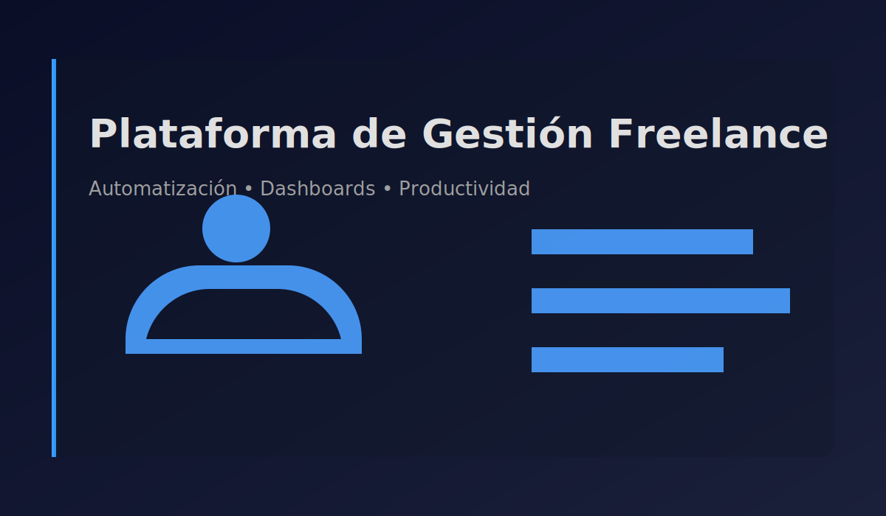

Plataforma de Gestión Freelance
Paneles de productividad, KPIs y automatizaciones.

Resumen
Plataforma integral para freelancers que centraliza proyectos, tareas y clientes. Incluye automatización de recordatorios, paneles de productividad y dashboards con KPIs.
Stack / Herramientas
MasterBase®
JavaScript
UI Components
Dashboards
Rol
Desarrollo de módulos y componentes orientados a operación: gestión de proyectos/tareas y visualización de productividad.
Highlights técnicos
- Componentes reutilizables y patrones UI para mantener consistencia y velocidad de entrega
- Formularios con validación de reglas de negocio y feedback inmediato para reducir errores
- Paneles de productividad y dashboards con KPIs para visibilidad operativa
- UX robusta: estados de carga/error/vacío y flujos claros para tareas frecuentes